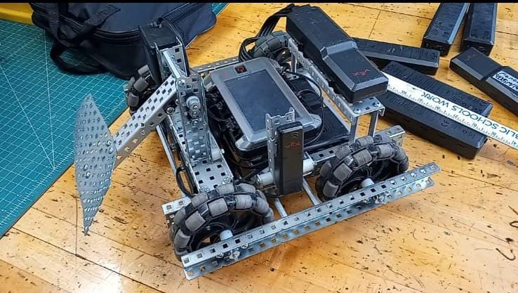
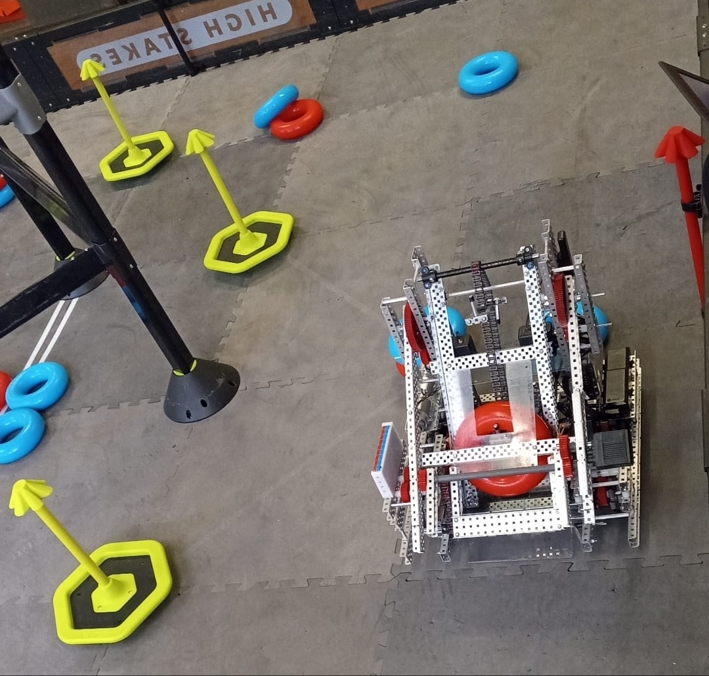

My passion for creating and designing through robotics inspired me to study Mechanical Engineering Technology at NJIT. These projects highlight my individual design work and my contributions to a team.

Over Under robot
Individual design · About 3 weeks
During my senior year of high school, I designed and built a robot based on VEX Robotics Over Under, one of the yearly competitions. The design was entirely my own, and the robot took about three weeks to complete.
Although it was never used in the competition itself, the robot was repurposed for in-house competitions during elementary school visits and for scrimmages with future competition robots.

High Stakes intake mechanism
Team project · About 6 months
I created the intake mechanism for our High Stakes robotics competition robot while working with a team on the robot over about six months.
The intake used added hooks to lift the rings, or “donuts,” so they could fall onto a mobile goal and be scored. My contribution focused on this mechanism within the team's robot.